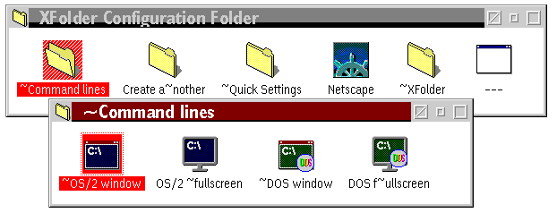

This is done with the use of a separate Configuration Folder, which looks just like any normal WPS folder. The installation script placed it on your desktop, but you may move it anywhere you like.
Whatever you put into this configuration folder will immediately appear in the context menus of all the folders on your system.
Let's clarify this by taking a look at the pre-set configuration again:
The pre-set configuration folder looks like this:

As you can see, the folders and program objects in the XFolder Configuration folder correspond to the items in the context menu.
However, the action which XFolder performs upon selecting a context menu items depends on the type of object that corresponds to the menu item. You need to differentiate between the following types of objects:
The four "command line" objects are pretty much copies of the ones that are also installed by OS/2 itself. The objects in the "Create a~nother" folder all point to a little REXX script in the XWorkplace installation directory, which can create folders and program objects.
XFolder can perform a number of useful tricks on program objects.
Please read through the "Extra features for program objects"
page to learn more.
For example, if you have created a folder template with special settings for fonts, colors, etc., you can put a shadow of it into a configuration folder, and when you select its corresponding menu item from a folder's context menu, a new folder will be created in this folder, just as if you had dragged a folder from the template.
See "Creating objects with XFolder" for more.
For example, you can put a shadow of your favorite data file (e.g. "To-do list") into
the context menus. Another example is the shadow of the OS/2 System notebook in the
"XWorkplace" submenu, with which you can access the
XWorkplace Global Settings.
As simple it may seem, the combined folder/object approach of the XFolder configuration folder is very powerful. You can add all your favorite programs, templates, and data files here which make sense to be executed in any directory.
If you know how to program REXX, you're even better off: you can write your own scripts that
manipulate the WPS, create program objects for them and put these in the configuration folders.
On the
"Frequently Asked Questions" page,
you can find out more about this.